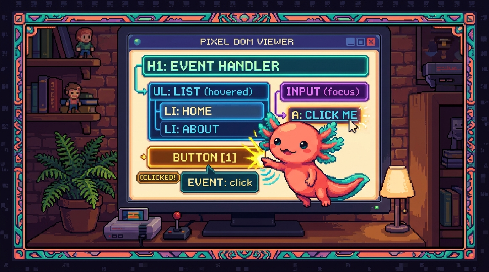

Capítulo 04 — El DOM y los eventos

Hasta ahora JavaScript solo conversaba con la consola. A partir de aquí empieza a hacer lo que de verdad cuenta en una web: cambiar la página mientras la miras y responder a lo que hace quien la usa (clics, escritura). Este es el punto donde HTML, CSS y JavaScript dejan de ir cada uno por su lado y empiezan a trabajar en equipo.
1. Recordando el DOM
🟦 ¿Qué significa? — DOM (repaso del Módulo 01)
El DOM (Document Object Model) es el árbol que el navegador arma a partir de tu HTML. Cada etiqueta se convierte en un "nodo" de ese árbol. Y JavaScript puede leerlo y modificarlo a su antojo: cambiar un texto, esconder un elemento, añadirle una clase de CSS o crear elementos desde cero. Cada vez que ves una web que "cambia sin recargar", detrás hay JavaScript tocando el DOM.
2. Seleccionar elementos: encontrar lo que quieres cambiar
Antes de cambiar algo, primero hay que agarrarlo. Para eso usamos los selectores, que son los mismos que ya conoces de CSS.
🟦 ¿Qué significa? —
documentyquerySelector
documentes toda la página entera.document.querySelector("...")recorre esa página y te devuelve el primer elemento que encaje con un selector CSS:javascript const titulo = document.querySelector("h1"); // el primer <h1> const boton = document.querySelector(".boton"); // el primer elemento con class="boton" const menu = document.querySelector("#menu"); // el elemento con id="menu"Si lo que quieres son todos los elementos que coincidan, y no solo el primero, usasquerySelectorAll, que te entrega una lista con todos ellos.🔎 En tu código
En tu
tunal-digital/sitio-web/main.jshay un par de funciones de atajo,$y$$, que no son más quequerySelectoryquerySelectorAllcon un nombre corto. Es un truco que verás mucho por ahí; ahora ya sabes qué hacen realmente por debajo.
3. Cambiar elementos: leer y modificar
Cuando ya tienes el elemento guardado en una variable, puedes empezar a cambiarle sus propiedades.
🟦 ¿Qué significa? —
textContenteinnerHTML
elemento.textContent→ lee o cambia el texto de un elemento.elemento.innerHTML→ lee o cambia el HTML interno (o sea, puede llevar etiquetas dentro).javascript const titulo = document.querySelector("h1"); titulo.textContent = "¡Texto cambiado por JavaScript!";⚠️ Cuando solo vas a meter texto, quédate contextContent. UsarinnerHTMLcon datos que escribe el usuario puede abrirte un agujero de seguridad (alguien podría colar código). Por eso tumain.jstiene una funciónescHTMLque "limpia" el texto antes de mostrarlo.🟦 ¿Qué significa? — Cambiar estilos y clases
javascript elemento.style.color = "#1B6B6B"; // cambia un estilo directo elemento.classList.add("activo"); // añade una clase CSS elemento.classList.remove("oculto"); // quita una clase elemento.classList.toggle("abierto"); // la pone si no está, la quita si estáclassList.togglevale su peso en oro: con una sola línea muestras u ocultas un menú. Así funciona, ni más ni menos, el botón del menú móvil de tu sitio: alterna una clase y el CSS se encarga del resto.💡 Tip — La división del trabajo
Fíjate en el patrón, porque es la forma limpia de hacerlo: JavaScript añade o quita una clase y el CSS decide cómo se ve esa clase. JS dice cuándo pasa algo, CSS dice cómo se ve. No metas el diseño dentro del JavaScript; deja que solo cambie clases. Así todo queda ordenado y no se te mezclan las cosas.
4. Eventos: reaccionar al usuario
🟦 ¿Qué significa? — Evento
Un evento es algo que pasa en la página: un clic, el ratón moviéndose, alguien escribiendo en un campo, un formulario que se envía, la página que termina de cargar. JavaScript puede quedarse "a la escucha" de esos eventos y ejecutar código justo cuando ocurren.
🟦 ¿Qué significa? —
addEventListener
elemento.addEventListener("evento", función)viene a decir: "cuando a este elemento le pase evento, ejecuta función". Sobre esta idea se construye toda la interactividad. ```javascript const boton = document.querySelector(".boton");boton.addEventListener("click", function () { console.log("¡Me hicieron clic!"); });
`` A la función que le pasas se le llama **callback**: no corre en el momento, sino **cuando ocurra** el evento. Algunos eventos que verás todo el tiempo:"click","input"(al escribir),"submit"(al enviar un formulario),"mouseover"` (al pasar el ratón por encima).🟦 ¿Qué significa? — Callback (función de retorno)
Un callback es una función que le entregas a otra para que la ejecute más tarde, cuando pase algo concreto. Es como decir "avísame cuando ocurra X". Lo vas a reencontrar en
fetch(el próximo capítulo) y también en React, así que conviene tenerlo claro desde ya.
5. Un ejemplo completo: un botón que muestra y oculta
Vamos a juntar las tres piezas: selección, eventos y clases.
<button class="abrir">Mostrar/ocultar menú</button>
<nav class="menu oculto">…enlaces…</nav>
.oculto { display: none; } /* el CSS define qué significa "oculto" */
const boton = document.querySelector(".abrir");
const menu = document.querySelector(".menu");
boton.addEventListener("click", () => {
menu.classList.toggle("oculto"); // alterna: muestra u oculta
});
Y eso es, básicamente, el menú de tu propio sitio. Un clic dispara el cambio de clase, y el CSS decide si el menú aparece o desaparece. Tres tecnologías, un solo resultado.
🟦 ¿Qué significa? — El objeto del evento y
preventDefaultTu callback recibe un dato con la información de lo que acaba de pasar (por costumbre lo llamamos
e). Una de las cosas más útiles que trae ese.preventDefault(), que frena el comportamiento que el navegador haría por defecto. El caso de siempre: al enviar un formulario, el navegador recarga la página; cone.preventDefault()se lo impides para encargarte tú del envío con JavaScript.javascript formulario.addEventListener("submit", (e) => { e.preventDefault(); // no recargues la página // …aquí tu código para procesar el formulario… });Tu sitio se apoya en esto para mandar el formulario de contacto sin que la página se recargue.
✅ Checklist — ¿ya domino esto?
- [ ] Entiendo que el DOM es la página que JavaScript puede modificar en vivo.
- [ ] Selecciono elementos con
querySelector/querySelectorAll(selectores CSS). - [ ] Cambio contenido con
textContent(y sé el riesgo deinnerHTML). - [ ] Cambio apariencia con
classList.add/remove/toggle(JS decide, CSS define). - [ ] Reacciono al usuario con
addEventListenery entiendo qué es un callback. - [ ] Sé para qué sirve
e.preventDefault().
🧪 Ejercicios
- Selector. Escribe la línea que guarda en una variable el elemento con
id="titulo". - Clase vs. estilo. ¿Por qué es mejor
elemento.classList.add("activo")que cambiar muchoselemento.style....desde JavaScript? - Evento. Escribe el código para que, al hacer clic en un botón con
class="saludar", aparezca en consola "¡Hola!". - toggle. Explica con tus palabras qué hace
menu.classList.toggle("oculto")si la clase ya está y si no está. - 💻 Contador de clics. Crea una página con un botón y un
<p>que muestre un número. Cada vez que se haga clic en el botón, súmale 1 al número (usa una variable, un evento ytextContent).
➡️ Siguiente: Capítulo 05 — Datos, JSON y fetch.